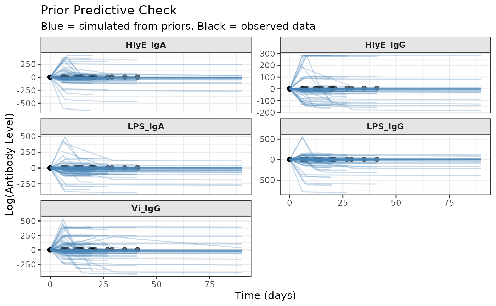

Visualizes antibody trajectories simulated from priors to assess whether prior distributions generate realistic curves for the study context.
Usage
plot_prior_predictive(
sim_data,
original_data = NULL,
log_scale = TRUE,
max_traj = 100,
show_points = TRUE,
alpha = 0.3
)Arguments
- sim_data
A simulated
prepped_jags_dataobject fromsimulate_prior_predictive(), or a list of such objects- original_data
Optional original
prepped_jags_dataobject fromprep_data()to overlay observed data- log_scale
logical Whether to plot on log scale (default = TRUE)
- max_traj
integer Maximum number of trajectories to plot per subject (default = 100). Useful when
sim_datacontains many simulations.- show_points
logical Whether to show individual observation points (default = TRUE)
- alpha
numeric Transparency for trajectory lines (default = 0.3)
Value
A ggplot2::ggplot() object
Details
Creates plots showing:
Simulated antibody trajectories over time
Separate panels for each biomarker (faceted)
Optional overlay of observed data for comparison
Multiple trajectories (if multiple simulations provided)
The plot uses log-scale antibody values by default (matching the model), but can optionally show natural scale.
Examples
# Prepare data and priors
set.seed(1)
raw_data <- serocalculator::typhoid_curves_nostrat_100 |>
sim_case_data(n = 5)
prepped_data <- prep_data(raw_data)
prepped_priors <- prep_priors(max_antigens = prepped_data$n_antigen_isos)
# Simulate and plot
sim_data <- simulate_prior_predictive(
prepped_data, prepped_priors, n_sims = 20
)
plot_prior_predictive(sim_data, original_data = prepped_data)
